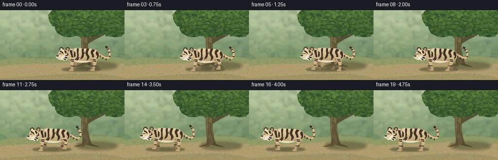
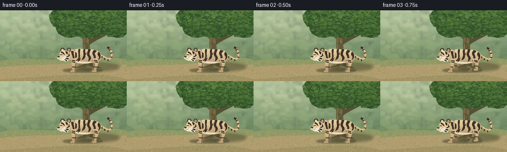

CODING AGENTS AS PIXEL WORLD MODELS
traex/GPT-6.1-Sol · instance_preservation_0055
点击播放 · 原生 RGB 像素
逐轮保存的候选
回放视频、检查图与代码变化。
每份候选均可单独播放。实际图片检查记录在下方工具轨迹中。
候选 01播放与检查图
点击播放 · 原生 RGB 像素


展开代码变化
--- 上一保存版本
+++ 本次保存版本
@@ -0,0 +1,258 @@
+from pathlib import Path
+import math
+import numpy as np
+from PIL import Image, ImageDraw, ImageFilter
+import artifact_io
+
+ROOT = Path(__file__).resolve().parent
+W,H,S=256,144,4
+rng=np.random.default_rng(29)
+
+class Canvas:
+ def __init__(self,w,h):
+ self.im=Image.new('RGBA',(w*S,h*S),(0,0,0,0))
+ self.d=ImageDraw.Draw(self.im)
+ def polygon(self,pts,fill):
+ self.d.polygon([(round(x*S),round(y*S)) for x,y in pts],fill=fill)
+ def ellipse(self,b,fill):
+ self.d.ellipse(tuple(round(v*S) for v in b),fill=fill)
+ def line(self,pts,fill,width=1):
+ self.d.line([(round(x*S),round(y*S)) for x,y in pts],fill=fill,width=max(1,round(width*S)),joint='curve')
+ def path(self,commands,fill=None,stroke=None,width=1):
+ pts=[]; p=(0,0)
+ for c in commands:
+ if c[0]=='M':
+ p=c[1:];pts.append(p)
+ elif c[0]=='L':
+ p=c[1:];pts.append(p)
+ elif c[0]=='C':
+ a=p;b=c[1:3];d=c[3:5];e=c[5:7]
+ for t in np.linspace(0,1,24)[1:]:
+ pts.append(tuple((1-t)**3*a[j]+3*(1-t)**2*t*b[j]+3*(1-t)*t*t*d[j]+t**3*e[j] for j in range(2)))
+ p=e
+ elif c[0]=='Q':
+ a=p;b=c[1:3];e=c[3:5]
+ for t in np.linspace(0,1,18)[1:]:
+ pts.append(tuple((1-t)**2*a[j]+2*(1-t)*t*b[j]+t*t*e[j] for j in range(2)))
+ p=e
+ if fill:self.polygon(pts,fill)
+ if stroke:self.line(pts,stroke,width)
+ return pts
+
+def shade_shape(c,commands,top,bottom,bounds,texture=1.5):
+ # The same object-space noise is used for every frame, so coat texture never flickers.
+ mask=Canvas(c.im.width//S,c.im.height//S)
+ mask.path(commands,fill='white')
+ bb=mask.im.getbbox()
+ if not bb:return
+ x0,y0,x1,y1=bb
+ yy,xx=np.mgrid[y0:y1,x0:x1]/S
+ f=np.clip((yy-bounds[0])/(bounds[1]-bounds[0]),0,1)
+ f=f**1.35
+ noise=(np.sin(xx*19.77+yy*3.42)*np.sin(yy*15.11-xx*2.57)+.4*np.sin(xx*47.1+yy*39.3))*texture
+ a=np.array(top)[None,None,:]*(1-f[:,:,None])+np.array(bottom)[None,None,:]*f[:,:,None]+noise[:,:,None]
+ patch=Image.fromarray(np.uint8(np.clip(a,0,255)),'RGB').convert('RGBA')
+ patch.putalpha(mask.im.crop(bb).getchannel('A'))
+ c.im.alpha_composite(patch,(x0,y0))
+ c.d=ImageDraw.Draw(c.im)
+
+# A stationary sunlit forest, rendered once.
+def background():
+ y,x=np.mgrid[0:H*S,0:W*S]/S
+ t=np.clip(y/115,0,1)
+ sky=np.array([170,190,160])[None,None,:]*(1-t[:,:,None])+np.array([103,132,91])[None,None,:]*t[:,:,None]
+ glow=np.exp(-((x-46)**2/8000+(y-30)**2/3600))
+ sky+=glow[:,:,None]*np.array([31,26,16])
+ sky+=rng.normal(0,.7,sky.shape[:2])[:,:,None]
+ c=Canvas(W,H);c.im=Image.fromarray(np.uint8(np.clip(sky,0,255)),'RGB').convert('RGBA');c.d=ImageDraw.Draw(c.im)
+ # Distant trunks in atmospheric perspective.
+ distant=Canvas(W,H)
+ for tx,wd,col in [(16,6,(117,138,106,110)),(49,3,(142,154,123,120)),(87,7,(113,132,102,115)),(117,4,(134,147,111,120)),(238,7,(91,117,83,130))]:
+ distant.polygon([(tx-wd,0),(tx+wd,0),(tx+wd*.6,105),(tx-wd*.4,109)],col)
+ distant.line([(tx,53),(tx-16,26),(tx-21,0)],col,wd*.65)
+ distant.line([(tx,37),(tx+18,17),(tx+24,0)],col,wd*.5)
+ for i in range(340):
+ xx=rng.uniform(-10,266); yy=rng.uniform(-5,99)
+ rr=rng.uniform(3,12)
+ col=[(110,139,97,55),(92,122,82,55),(174,187,136,50),(145,166,109,60)][i%4]
+ distant.ellipse((xx-rr,yy-rr*.5,xx+rr,yy+rr*.5),col)
+ distant.im=distant.im.filter(ImageFilter.GaussianBlur(S*1.9));c.im.alpha_composite(distant.im)
+ c.d=ImageDraw.Draw(c.im)
+ # Soil clearing.
+ ground=[('M',0,103),('C',48,92,90,103,120,99),('C',169,95,226,92,256,100),('L',256,144),('L',0,144)]
+ shade_shape(c,ground,(143,155,103),(164,145,99),(99,144),2.0)
+ c.path([('M',0,116),('C',56,108,93,113,148,107),('C',209,100,237,115,256,110),('L',256,140),('C',190,120,97,136,0,140)],fill=(176,157,111,115))
+ # Ground texture, fallen leaves, patches of grass.
+ for i in range(1900):
+ xx=rng.uniform(0,256);yy=rng.uniform(102,144)
+ if rng.random()<.55:
+ col=(int(rng.integers(110,174)),int(rng.integers(112,155)),int(rng.integers(65,106)),int(rng.integers(35,115)))
+ c.line([(xx,yy),(xx+rng.uniform(.3,2),yy-.15)],col,.24)
+ else:
+ c.ellipse((xx,yy,xx+rng.uniform(.2,1.3),yy+rng.uniform(.1,.5)),(204,186,130,70))
+ # Big recognizable tree, behind the animal.
+ shadow=Canvas(W,H)
+ shadow.ellipse((156,106,241,122),(54,71,39,80));shadow.im=shadow.im.filter(ImageFilter.GaussianBlur(S*3));c.im.alpha_composite(shadow.im);c.d=ImageDraw.Draw(c.im)
+ trunk=[('M',168,113),('C',172,93,164,76,168,53),('C',171,38,163,28,160,18),('L',171,16),('C',177,30,183,40,181,57),('C',180,78,182,99,190,113),('C',180,110,177,109,168,113)]
+ shade_shape(c,trunk,(119,111,71),(86,76,49),(19,113),2.6)
+ c.path([('M',171,62),('C',159,52,149,43,135,35),('L',139,29),('C',157,35,166,45,177,51)],fill=(100,94,62))
+ c.path([('M',176,48),('C',189,36,196,25,201,11),('L',207,15),('C',201,35,192,47,180,62)],fill=(85,83,51))
+ c.path([('M',178,72),('C',197,56,219,53,229,38),('L',226,33),('C',211,48,194,49,179,61)],fill=(85,81,52))
+ for i in range(33):
+ tx=rng.uniform(169,180);start=rng.uniform(34,98);end=min(start+rng.uniform(8,30),110)
+ c.path([('M',tx,start),('C',tx+rng.uniform(-3,2),start+7,tx-2,end-4,tx+2,end)],stroke=[(66,62,41,160),(152,134,88,145),(106,91,60,190)][i%3],width=rng.uniform(.3,.8))
+ c.path([('M',173,110),('C',163,111,159,115,151,116),('C',161,118,172,113,177,112)],fill=(91,80,50))
+ c.path([('M',180,108),('C',185,110,197,113,204,117),('C',194,117,184,114,178,112)],fill=(81,72,45))
+ c.path([('M',175,107),('C',173,114,166,117,164,119),('L',173,116),('L',181,108)],fill=(102,87,55))
+ # Broad, layered leafy crown with light on its upper-left edges.
+ for xx,yy,rx,ry in [(136,15,36,25),(178,8,46,30),(218,13,43,34),(235,34,28,21),(179,32,44,23),(141,35,28,20)]:
+ c.ellipse((xx-rx,yy-ry,xx+rx,yy+ry),(52,82,44))
+ for i in range(1600):
+ xx=rng.uniform(101,264);yy=rng.uniform(-18,56)
+ inside=min(((xx-a)/rx)**2+((yy-b)/ry)**2 for a,b,rx,ry in [(136,15,36,25),(178,8,46,30),(218,13,43,34),(235,34,28,21),(179,32,44,23),(141,35,28,20)])
+ if inside>.99:continue
+ sz=rng.uniform(.65,4.0)
+ lum=.43*(1-yy/75)+rng.uniform(-.16,.3)
+ col=tuple(int(v) for v in np.clip(np.array([43,75,37])+lum*np.array([73,86,39]),0,255))+(235,)
+ c.ellipse((xx-sz,yy-sz*.55,xx+sz,yy+sz*.55),col)
+ if i%4==0:c.line([(xx-sz*.6,yy),(xx+sz*.55,yy-.25)],(149,162,79,90),.22)
+ # Wisps of grass around the roots and outer edges.
+ for i in range(250):
+ xx=rng.uniform(0,256);yy=rng.uniform(99,143)
+ if 15<xx<150 and 111<yy<132 and rng.random()<.85:continue
+ hh=rng.uniform(1,4.8);co=[(84,110,55,170),(111,130,69,180),(161,159,89,155)][i%3]
+ c.line([(xx,yy),(xx+rng.uniform(-1.8,1.8),yy-hh)],co,.35)
+ return c.im
+
+BG=background()
+
+# Tiger is built in object space; stripes are permanently anchored to the anatomy.
+DARK=(58,46,36,255)
+STRIPE=(63,49,38,255)
+BEIGE=(204,178,130,255)
+
+def limb(c,hip,knee,ankle,front=False,far=False):
+ hx,hy=hip;kx,ky=knee;ax,ay=ankle
+ color=(154,131,94) if far else (221,197,149)
+ lower=(129,109,78) if far else (178,150,107)
+ pts=[('M',hx-4.8,hy-2),('C',hx-6,hy+5,kx-4.1,ky-3,kx-3.1,ky+2),('L',ax-2.3,ay-2),('C',ax-4.5,ay-1,ax-7.0,ay+.1,ax-6.2,ay+2),('C',ax-3.0,ay+3,ax+2.6,ay+2.6,ax+3.0,ay+1.2),('L',ax+2.2,ay-3),('L',kx+3.4,ky),('C',kx+4.4,ky-3,hx+5,hy+4,hx+4.5,hy-1)]
+ shade_shape(c,pts,color,lower,(hy-3,ay+3),1)
+ # Bands follow each separate articulated segment.
+ for t in [.3,.65]:
+ px=hx+(kx-hx)*t;py=hy+(ky-hy)*t
+ c.polygon([(px-4,py-1.4),(px+3.5,py-.2),(px+2.9,py+1.8),(px-3.6,py+.2)],DARK)
+ px=kx+(ax-kx)*.47;py=ky+(ay-ky)*.47
+ c.polygon([(px-2.8,py-1),(px+2.8,py-.5),(px+2.6,py+1.1),(px-2.5,py+.5)],DARK)
+ if not far:
+ c.path([('M',ax-5,ay+.7),('L',ax+1.5,ay+1.5)],stroke=(233,215,181,255),width=.65)
+ for o in [-3,-1]:c.line([(ax+o,ay+.8),(ax+o-.1,ay+2)],(101,81,59,200),.35)
+
+def tiger(frame):
+ c=Canvas(150,86)
+ # A short hold, a smooth walk, then settle, without changing identity or camera.
+ u=np.clip((frame-2)/15,0,1)
+ smooth=u*u*(3-2*u)
+ # Nearly constant-speed central section, eased departure and arrival.
+ travel=93*smooth
+ walking=2<frame<18
+ phase=(frame-2)*.75
+ amp=1 if walking else 0
+ bob=amp*.6*math.sin(phase*2)
+ y=42+bob
+ # Tail, visible behind the rump, with mild, natural secondary motion.
+ sway=1.7*math.sin(phase*.5)*amp
+ tail=[('M',109,y-4),('C',119,y-3,130,y+10,134,y+2),('C',139,y-8,132,y-17+sway,127,y-19+sway)]
+ c.path(tail,stroke=(166,140,101,255),width=4.8)
+ c.path(tail,stroke=(220,194,145,255),width=3.0)
+ for pts in [[(116,y-1),(115.5,y+2.6)],[(122,y+3),(120.5,y+6.4)],[(128,y+5.6),(128,y+9)],[(133,y+.4),(137,y+1.5)],[(133,y-7),(137,y-8)],[(130,y-13+sway),(134,y-15+sway)]]:
+ c.line(pts,DARK,2.0)
+ c.path([('M',131,y-16+sway),('Q',129,y-18+sway,127,y-19+sway)],stroke=DARK,width=4)
+ # Far-side limbs first. Opposite pairs form a walk rather than a slide.
+ def leg_pose(hx,offset,hind=False):
+ z=phase+offset
+ swing=math.sin(z)*5.8*amp
+ lift=max(0,math.cos(z))*4.2*amp
+ ankle=(hx+swing-1,71-lift)
+ knee=(hx+(2 if hind else -1)+swing*.35,56-lift*.35)
+ return (hx,y+5),knee,ankle
+ limb(c,*leg_pose(99,math.pi,True),far=True)
+ limb(c,*leg_pose(62,0),front=True,far=True)
+ # Torso silhouette includes shoulder blade and rounded muscular haunches.
+ body=[('M',54,y-10),('C',62,y-18,72,y-16,81,y-15),('C',93,y-15,103,y-16,111,y-9),('C',116,y-5,116,y+5,110,y+9),('C',101,y+15,91,y+12,84,y+12),('C',74,y+13,64,y+15,58,y+10),('C',53,y+5,49,y-1,54,y-10)]
+ shade_shape(c,body,(232,210,165),(179,150,108),(y-17,y+14),2.3)
+ c.path([('M',56,y+5),('C',65,y+11,85,y+10,98,y+11),('C',85,y+16,70,y+15,59,y+10)],fill=(232,219,186,255))
+ c.path([('M',61,y-13),('C',70,y-16,89,y-14,104,y-13)],stroke=(242,221,177,210),width=.9)
+ # Irregular tapering stripes, with forks characteristic of tiger coats.
+ for cmd in [
+ [('M',61,y-14),('C',60,y-9,64,y-6,63,y+2),('C',60,y-2,57,y-4,58,y-10)],
+ [('M',69,y-16),('C',66,y-10,70,y-6,68,y+3),('C',66,y+7,64,y+6,64,y+9),('C',69,y+9,73,y+1,71,y-5),('L',72,y-15)],
+ [('M',79,y-15),('C',76,y-10,80,y-6,78,y-1),('L',75,y+7),('C',81,y+5,83,y+1,82,y-4),('L',82,y-15)],
+ [('M',88,y-15),('C',87,y-9,84,y-6,87,y-1),('C',91,y+3,88,y+7,88,y+10),('C',95,y+5,95,y+2,91,y-3),('C',89,y-8,93,y-11,93,y-15)],
+ [('M',100,y-14),('C',95,y-9,96,y-5,99,y-1),('C',100,y+3,97,y+7,97,y+9),('C',104,y+5,104,y+1,102,y-4),('C',99,y-8,105,y-9,105,y-12)],
+ [('M',109,y-10),('C',105,y-5,108,y-2,110,y+1),('L',108,y+7),('C',115,y+3,113,y-3,112,y-7)],
+ ]:c.path(cmd,fill=STRIPE)
+ c.path([('M',80,y-5),('Q',84,y-6,85,y-11),('L',84,y-5),('L',79,y)],fill=STRIPE)
+ c.path([('M',69,y+5),('L',73,y+2),('L',71,y+8),('L',67,y+11)],fill=STRIPE)
+ # Near hindleg, then shoulder, neck and foreleg.
+ limb(c,*leg_pose(103,0,True))
+ neck=[('M',60,y-12),('C',57,y-17,49,y-14,47,y-8),('C',45,y-2,49,y+5,57,y+11),('L',65,y+5),('C',69,y-2,66,y-9,60,y-12)]
+ shade_shape(c,neck,(225,202,156),(183,155,113),(y-16,y+12),2)
+ c.path([('M',54,y-12),('C',53,y-6,56,y-4,57,y+3),('L',60,y+6),('C',61,y,57,y-6,59,y-11)],fill=STRIPE)
+ c.path([('M',61,y-10),('C',63,y-8,61,y-1,62,y+3),('L',65,y+1),('L',65,y-7)],fill=STRIPE)
+ limb(c,*leg_pose(59,math.pi),front=True)
+ # Head: short feline muzzle, broad cheek, rounded ears, white facial markings.
+ hx=43;hy=y-2+amp*.2*math.cos(phase)
+ c.ellipse((45,hy-16,53,hy-7),DARK)
+ c.ellipse((46.5,hy-14.5,51.6,hy-8),(175,149,111,255))
+ c.ellipse((32,hy-16,40.4,hy-7),DARK)
+ c.ellipse((33.4,hy-14.2,38.8,hy-8),(200,176,134,255))
+ c.ellipse((34.5,hy-12.7,37.7,hy-10),(234,220,189,255))
+ head=[('M',32,hy-7),('C',32,hy-11,40,hy-12,47,hy-9),('C',53,hy-6,53,hy+2,49,hy+8),('C',47,hy+12,39,hy+12,34,hy+8),('L',28,hy+7),('C',25,hy+6,26,hy+2,29,hy),('C',30,hy-2,30,hy-5,32,hy-7)]
+ shade_shape(c,head,(237,214,169),(198,168,123),(hy-10,hy+12),1.6)
+ # White cheek ruff and chin.
+ c.path([('M',40,hy+1),('C',46,hy-1,50,hy+4,49,hy+8),('L',46,hy+12),('L',45,hy+10),('L',42,hy+12),('C',38,hy+10,34,hy+9,33,hy+5)],fill=(237,227,201,255))
+ c.path([('M',29,hy+6),('C',29,hy+10,35,hy+11,39,hy+9),('L',39,hy+7)],fill=(243,233,208,255))
+ # Face stripes on the forehead and cheeks.
+ c.path([('M',34,hy-9),('L',39,hy-6),('L',41,hy-1),('L',36,hy-4),('L',33,hy-6)],fill=DARK)
+ c.path([('M',42,hy-10),('L',43,hy-5),('L',46,hy-2),('L',47,hy-7)],fill=DARK)
+ c.path([('M',49,hy-6),('L',48,hy),('L',43,hy+2),('L',47,hy+3),('L',51,hy)],fill=DARK)
+ c.path([('M',49,hy+5),('L',44,hy+4),('L',42,hy+6),('L',48,hy+8)],fill=DARK)
+ c.path([('M',46,hy+9),('L',40,hy+7),('L',41,hy+9),('L',44,hy+11)],fill=DARK)
+ # Eyebrow, amber eye and tear line.
+ c.path([('M',30.9,hy-3),('Q',33.8,hy-5.1,37,hy-3.7)],stroke=(244,231,197,255),width=1.35)
+ c.path([('M',30.8,hy-2.3),('Q',33.8,hy-4,36.2,hy-2.2),('Q',33.5,hy-.1,30.8,hy-2.3)],fill=(47,42,32,255))
+ c.ellipse((32.2,hy-3.1,34.8,hy-1.25),(182,153,74,255))
+ c.ellipse((32.8,hy-2.9,33.7,hy-1.25),(26,30,22,255))
+ c.ellipse((32.7,hy-2.85,33.35,hy-2.3),(255,249,220,255))
+ c.line([(31,hy-1.6),(29.6,hy+1.3)],DARK,.6)
+ # Rounded muzzle and nose, not a canine snout.
+ c.ellipse((25.3,hy+1,35.9,hy+7.8),(239,225,193,255))
+ c.path([('M',25.8,hy+1.5),('Q',29,hy+.2,31.3,hy+2),('L',28.7,hy+4.1),('L',26.2,hy+3.6)],fill=(71,53,42,255))
+ c.line([(28.7,hy+4),(29.4,hy+6.1),(34,hy+7)],(86,64,49,255),.5)
+ for dx,dy in [(31.5,3.4),(33,4.8),(32,6),(34.5,3.6)]:c.ellipse((dx,hy+dy,dx+.55,hy+dy+.55),(78,61,45,255))
+ for j in range(3):
+ c.path([('M',32.4,hy+4+j*.7),('Q',26,hy+3+j*1.9,21-j*.6,hy+2+j*2.4)],stroke=(241,234,210,210),width=.22)
+ # Small fur accents, fixed across all frames.
+ for k in range(90):
+ xx=58+(k*13.137)%52;yy=y-10+(k*5.373)%17
+ if k%3==0:c.line([(xx,yy),(xx+.7,yy+.15)],(244,225,189,90),.16)
+ for k in range(12):
+ yy=hy+2+k*.6
+ c.line([(48.2,yy),(50+(k%3)*.3,yy+.65)],(230,218,187,220),.35)
+ return c.im,170-travel,94+bob
+
+frames=[]
+for i in range(20):
+ im=BG.copy()
+ animal,cx,cy=tiger(i)
+ sh=Canvas(W,H)
+ sh.ellipse((cx-43,118,cx+37,126),(61,65,37,83))
+ sh.ellipse((cx-32,120,cx+28,124),(45,51,29,85))
+ sh.im=sh.im.filter(ImageFilter.GaussianBlur(S*1.35))
+ im.alpha_composite(sh.im)
+ # Object-space ground line stays fixed; anatomical bob is rendered internally.
+ im.alpha_composite(animal,(round((cx-80)*S),52*S))
+ small=im.convert('RGB').resize((W,H),Image.Resampling.LANCZOS)
+ frames.append(np.asarray(small,dtype=np.uint8))
+artifact_io.save(np.stack(frames),ROOT)
+print('Saved 20 RGB frames at 256 x 144, 4 fps.')
可观测工具轨迹
实际执行的命令与返回图片。
命令 1exit 0
/bin/bash -lc 'ls -la && cat prompt.txt && cat GENERATION_RULES.md && cat task_spec.json'
命令 2exit 0
/bin/bash -lc "cat artifact_io.py && python - <<'PY' import PIL, numpy print(PIL.__version__) PY"
命令 3exit 0
/bin/bash -lc 'which ffmpeg || true; ls -la .tmp'
命令 4exit 0
/bin/bash -lc "cat > generate.py <<'PY'
from pathlib import Path
import math
import numpy as np
from PIL import Image, ImageDraw, ImageFilter
import artifact_io
ROOT = Path(__file__).resolve().parent
W,H,S=256,144,4
rng=np.random.default_rng(29)
class Canvas:
def __init__(self,w,h):
self.im=Image.new('RGBA',(w*S,h*S),(0,0,0,0))
self.d=ImageDraw.Draw(self.im)
def polygon(self,pts,fill):
self.d.polygon([(round(x*S),round(y*S)) for x,y in pts],fill=fill)
def ellipse(self,b,fill):
self.d.ellipse(tuple(round(v*S) for v in b),fill=fill)
def line(self,pts,fill,width=1):
self.d.line([(round(x*S),round(y*S)) for x,y in pts],fill=fill,width=max(1,round(width*S)),joint='curve')
def path(self,commands,fill=None,stroke=None,width=1):
pts=[]; p=(0,0)
for c in commands:
if c[0]=='M':
p=c[1:];pts.append(p)
elif c[0]=='L':
p=c[1:];pts.append(p)
elif c[0]=='C':
a=p;b=c[1:3];d=c[3:5];e=c[5:7]
for t in np.linspace(0,1,24)[1:]:
pts.append(tuple((1-t)**3*a[j]+3*(1-t)**2*t*b[j]+3*(1-t)*t*t*d[j]+t**3*e[j] for j in range(2)))
p=e
elif c[0]=='Q':
a=p;b=c[1:3];e=c[3:5]
for t in np.linspace(0,1,18)[1:]:
pts.append(tuple((1-t)**2*a[j]+2*(1-t)*t*b[j]+t*t*e[j] for j in range(2)))
p=e
if fill:self.polygon(pts,fill)
if stroke:self.line(pts,stroke,width)
return pts
def shade_shape(c,commands,top,bottom,bounds,texture=1.5):
# The same object-space noise is used for every frame, so coat texture never flickers.
mask=Canvas(c.im.width//S,c.im.height//S)
mask.path(commands,fill='white')
bb=mask.im.getbbox()
if not bb:return
x0,y0,x1,y1=bb
yy,xx=np.mgrid[y0:y1,x0:x1]/S
f=np.clip((yy-bounds[0])/(bounds[1]-bounds[0]),0,1)
f=f**1.35
noise=(np.sin(xx*19.77+yy*3.42)*np.sin(yy*15.11-xx*2.57)+.4*np.sin(xx*47.1+yy*39.3))*texture
a=np.array(top)[None,None,:]*(1-f[:,:,None])+np.array(bottom)[None,None,:]*f[:,:,None]+noise[:,:,None]
patch=Image.fromarray(np.uint8(np.clip(a,0,255)),'RGB').convert('RGBA')
patch.putalpha(mask.im.crop(bb).getchannel('A'))
c.im.alpha_composite(patch,(x0,y0))
c.d=ImageDraw.Draw(c.im)
# A stationary sunlit forest, rendered once.
def background():
y,x=np.mgrid[0:H*S,0:W*S]/S
t=np.clip(y/115,0,1)
sky=np.array([170,190,160])[None,None,:]*(1-t[:,:,None])+np.array([103,132,91])[None,None,:]*t[:,:,None]
glow=np.exp(-((x-46)**2/8000+(y-30)**2/3600))
sky+=glow[:,:,None]*np.array([31,26,16])
sky+=rng.normal(0,.7,sky.shape[:2])[:,:,None]
c=Canvas(W,H);c.im=Image.fromarray(np.uint8(np.clip(sky,0,255)),'RGB').convert('RGBA');c.d=ImageDraw.Draw(c.im)
# Distant trunks in atmospheric perspective.
distant=Canvas(W,H)
for tx,wd,col in [(16,6,(117,138,106,110)),(49,3,(142,154,123,120)),(87,7,(113,132,102,115)),(117,4,(134,147,111,120)),(238,7,(91,117,83,130))]:
distant.polygon([(tx-wd,0),(tx+wd,0),(tx+wd*.6,105),(tx-wd*.4,109)],col)
distant.line([(tx,53),(tx-16,26),(tx-21,0)],col,wd*.65)
distant.line([(tx,37),(tx+18,17),(tx+24,0)],col,wd*.5)
for i in range(340):
xx=rng.uniform(-10,266); yy=rng.uniform(-5,99)
rr=rng.uniform(3,12)
col=[(110,139,97,55),(92,122,82,55),(174,187,136,50),(145,166,109,60)][i%4]
distant.ellipse((xx-rr,yy-rr*.5,xx+rr,yy+rr*.5),col)
distant.im=distant.im.filter(ImageFilter.GaussianBlur(S*1.9));c.im.alpha_composite(distant.im)
c.d=ImageDraw.Draw(c.im)
# Soil clearing.
ground=[('M',0,103),('C',48,92,90,103,120,99),('C',169,95,226,92,256,100),('L',256,144),('L',0,144)]
shade_shape(c,ground,(143,155,103),(164,145,99),(99,144),2.0)
c.path([('M',0,116),('C',56,108,93,113,148,107),('C',209,100,237,115,256,110),('L',256,140),('C',190,120,97,136,0,140)],fill=(176,157,111,115))
# Ground texture, fallen leaves, patches of grass.
for i in range(1900):
xx=rng.uniform(0,256);yy=rng.uniform(102,144)
if rng.random()<.55:
col=(int(rng.integers(110,174)),int(rng.integers(112,155)),int(rng.integers(65,106)),int(rng.integers(35,115)))
c.line([(xx,yy),(xx+rng.uniform(.3,2),yy-.15)],col,.24)
else:
c.ellipse((xx,yy,xx+rng.uniform(.2,1.3),yy+rng.uniform(.1,.5)),(204,186,130,70))
# Big recognizable tree, behind the animal.
shadow=Canvas(W,H)
shadow.ellipse((156,106,241,122),(54,71,39,80));shadow.im=shadow.im.filter(ImageFilter.GaussianBlur(S*3));c.im.alpha_composite(shadow.im);c.d=ImageDraw.Draw(c.im)
trunk=[('M',168,113),('C',172,93,164,76,168,53),('C',171,38,163,28,160,18),('L',171,16),('C',177,30,183,40,181,57),('C',180,78,182,99,190,113),('C',180,110,177,109,168,113)]
shade_shape(c,trunk,(119,111,71),(86,76,49),(19,113),2.6)
c.path([('M',171,62),('C',159,52,149,43,135,35),('L',139,29),('C',157,35,166,45,177,51)],fill=(100,94,62))
c.path([('M',176,48),('C',189,36,196,25,201,11),('L',207,15),('C',201,35,192,47,180,62)],fill=(85,83,51))
c.path([('M',178,72),('C',197,56,219,53,229,38),('L',226,33),('C',211,48,194,49,179,61)],fill=(85,81,52))
for i in range(33):
tx=rng.uniform(169,180);start=rng.uniform(34,98);end=min(start+rng.uniform(8,30),110)
c.path([('M',tx,start),('C',tx+rng.uniform(-3,2),start+7,tx-2,end-4,tx+2,end)],stroke=[(66,62,41,160),(152,134,88,145),(106,91,60,190)][i%3],width=rng.uniform(.3,.8))
c.path([('M',173,110),('C',163,111,159,115,151,116),('C',161,118,172,113,177,112)],fill=(91,80,50))
c.path([('M',180,108),('C',185,110,197,113,204,117),('C',194,117,184,114,178,112)],fill=(81,72,45))
c.path([('M',175,107),('C',173,114,166,117,164,119),('L',173,116),('L',181,108)],fill=(102,87,55))
# Broad, layered leafy crown with light on its upper-left edges.
for xx,yy,rx,ry in [(136,15,36,25),(178,8,46,30),(218,13,43,34),(235,34,28,21),(179,32,44,23),(141,35,28,20)]:
c.ellipse((xx-rx,yy-ry,xx+rx,yy+ry),(52,82,44))
for i in range(1600):
xx=rng.uniform(101,264);yy=rng.uniform(-18,56)
inside=min(((xx-a)/rx)**2+((yy-b)/ry)**2 for a,b,rx,ry in [(136,15,36,25),(178,8,46,30),(218,13,43,34),(235,34,28,21),(179,32,44,23),(141,35,28,20)])
if inside>.99:continue
sz=rng.uniform(.65,4.0)
lum=.43*(1-yy/75)+rng.uniform(-.16,.3)
col=tuple(int(v) for v in np.clip(np.array([43,75,37])+lum*np.array([73,86,39]),0,255))+(235,)
c.ellipse((xx-sz,yy-sz*.55,xx+sz,yy+sz*.55),col)
if i%4==0:c.line([(xx-sz*.6,yy),(xx+sz*.55,yy-.25)],(149,162,79,90),.22)
# Wisps of grass around the roots and outer edges.
for i in range(250):
xx=rng.uniform(0,256);yy=rng.uniform(99,143)
if 15<xx<150 and 111<yy<132 and rng.random()<.85:continue
hh=rng.uniform(1,4.8);co=[(84,110,55,170),(111,130,69,180),(161,159,89,155)][i%3]
c.line([(xx,yy),(xx+rng.uniform(-1.8,1.8),yy-hh)],co,.35)
return c.im
BG=background()
# Tiger is built in object space; stripes are permanently anchored to the anatomy.
DARK=(58,46,36,255)
STRIPE=(63,49,38,255)
BEIGE=(204,178,130,255)
def limb(c,hip,knee,ankle,front=False,far=False):
hx,hy=hip;kx,ky=knee;ax,ay=ankle
color=(154,131,94) if far else (221,197,149)
lower=(129,109,78) if far else (178,150,107)
pts=[('M',hx-4.8,hy-2),('C',hx-6,hy+5,kx-4.1,ky-3,kx-3.1,ky+2),('L',ax-2.3,ay-2),('C',ax-4.5,ay-1,ax-7.0,ay+.1,ax-6.2,ay+2),('C',ax-3.0,ay+3,ax+2.6,ay+2.6,ax+3.0,ay+1.2),('L',ax+2.2,ay-3),('L',kx+3.4,ky),('C',kx+4.4,ky-3,hx+5,hy+4,hx+4.5,hy-1)]
shade_shape(c,pts,color,lower,(hy-3,ay+3),1)
# Bands follow each separate articulated segment.
for t in [.3,.65]:
px=hx+(kx-hx)*t;py=hy+(ky-hy)*t
c.polygon([(px-4,py-1.4),(px+3.5,py-.2),(px+2.9,py+1.8),(px-3.6,py+.2)],DARK)
px=kx+(ax-kx)*.47;py=ky+(ay-ky)*.47
c.polygon([(px-2.8,py-1),(px+2.8,py-.5),(px+2.6,py+1.1),(px-2.5,py+.5)],DARK)
if not far:
c.path([('M',ax-5,ay+.7),('L',ax+1.5,ay+1.5)],stroke=(233,215,181,255),width=.65)
for o in [-3,-1]:c.line([(ax+o,ay+.8),(ax+o-.1,ay+2)],(101,81,59,200),.35)
def tiger(frame):
c=Canvas(150,86)
# A short hold, a smooth walk, then settle, without changing identity or camera.
u=np.clip((frame-2)/15,0,1)
smooth=u*u*(3-2*u)
# Nearly constant-speed central section, eased departure and arrival.
travel=93*smooth
walking=2<frame<18
phase=(frame-2)*.75
amp=1 if walking else 0
bob=amp*.6*math.sin(phase*2)
y=42+bob
# Tail, visible behind the rump, with mild, natural secondary motion.
sway=1.7*math.sin(phase*.5)*amp
tail=[('M',109,y-4),('C',119,y-3,130,y+10,134,y+2),('C',139,y-8,132,y-17+sway,127,y-19+sway)]
c.path(tail,stroke=(166,140,101,255),width=4.8)
c.path(tail,stroke=(220,194,145,255),width=3.0)
for pts in [[(116,y-1),(115.5,y+2.6)],[(122,y+3),(120.5,y+6.4)],[(128,y+5.6),(128,y+9)],[(133,y+.4),(137,y+1.5)],[(133,y-7),(137,y-8)],[(130,y-13+sway),(134,y-15+sway)]]:
c.line(pts,DARK,2.0)
c.path([('M',131,y-16+sway),('Q',129,y-18+sway,127,y-19+sway)],stroke=DARK,width=4)
# Far-side limbs first. Opposite pairs form a walk rather than a slide.
def leg_pose(hx,offset,hind=False):
z=phase+offset
swing=math.sin(z)*5.8*amp
lift=max(0,math.cos(z))*4.2*amp
ankle=(hx+swing-1,71-lift)
knee=(hx+(2 if hind else -1)+swing*.35,56-lift*.35)
return (hx,y+5),knee,ankle
limb(c,*leg_pose(99,math.pi,True),far=True)
limb(c,*leg_pose(62,0),front=True,far=True)
# Torso silhouette includes shoulder blade and rounded muscular haunches.
body=[('M',54,y-10),('C',62,y-18,72,y-16,81,y-15),('C',93,y-15,103,y-16,111,y-9),('C',116,y-5,116,y+5,110,y+9),('C',101,y+15,91,y+12,84,y+12),('C',74,y+13,64,y+15,58,y+10),('C',53,y+5,49,y-1,54,y-10)]
shade_shape(c,body,(232,210,165),(179,150,108),(y-17,y+14),2.3)
c.path([('M',56,y+5),('C',65,y+11,85,y+10,98,y+11),('C',85,y+16,70,y+15,59,y+10)],fill=(232,219,186,255))
c.path([('M',61,y-13),('C',70,y-16,89,y-14,104,y-13)],stroke=(242,221,177,210),width=.9)
# Irregular tapering stripes, with forks characteristic of tiger coats.
for cmd in [
[('M',61,y-14),('C',60,y-9,64,y-6,63,y+2),('C',60,y-2,57,y-4,58,y-10)],
[('M',69,y-16),('C',66,y-10,70,y-6,68,y+3),('C',66,y+7,64,y+6,64,y+9),('C',69,y+9,73,y+1,71,y-5),('L',72,y-15)],
[('M',79,y-15),('C',76,y-10,80,y-6,78,y-1),('L',75,y+7),('C',81,y+5,83,y+1,82,y-4),('L',82,y-15)],
[('M',88,y-15),('C',87,y-9,84,y-6,87,y-1),('C',91,y+3,88,y+7,88,y+10),('C',95,y+5,95,y+2,91,y-3),('C',89,y-8,93,y-11,93,y-15)],
[('M',100,y-14),('C',95,y-9,96,y-5,99,y-1),('C',100,y+3,97,y+7,97,y+9),('C',104,y+5,104,y+1,102,y-4),('C',99,y-8,105,y-9,105,y-12)],
[('M',109,y-10),('C',105,y-5,108,y-2,110,y+1),('L',108,y+7),('C',115,y+3,113,y-3,112,y-7)],
]:c.path(cmd,fill=STRIPE)
c.path([('M',80,y-5),('Q',84,y-6,85,y-11),('L',84,y-5),('L',79,y)],fill=STRIPE)
c.path([('M',69,y+5),('L',73,y+2),('L',71,y+8),('L',67,y+11)],fill=STRIPE)
# Near hindleg, then shoulder, neck and foreleg.
limb(c,*leg_pose(103,0,True))
neck=[('M',60,y-12),('C',57,y-17,49,y-14,47,y-8),('C',45,y-2,49,y+5,57,y+11),('L',65,y+5),('C',69,y-2,66,y-9,60,y-12)]
shade_shape(c,neck,(225,202,156),(183,155,113),(y-16,y+12),2)
c.path([('M',54,y-12),('C',53,y-6,56,y-4,57,y+3),('L',60,y+6),('C',61,y,57,y-6,59,y-11)],fill=STRIPE)
c.path([('M',61,y-10),('C',63,y-8,61,y-1,62,y+3),('L',65,y+1),('L',65,y-7)],fill=STRIPE)
limb(c,*leg_pose(59,math.pi),front=True)
# Head: short feline muzzle, broad cheek, rounded ears, white facial markings.
hx=43;hy=y-2+amp*.2*math.cos(phase)
c.ellipse((45,hy-16,53,hy-7),DARK)
c.ellipse((46.5,hy-14.5,51.6,hy-8),(175,149,111,255))
c.ellipse((32,hy-16,40.4,hy-7),DARK)
c.ellipse((33.4,hy-14.2,38.8,hy-8),(200,176,134,255))
c.ellipse((34.5,hy-12.7,37.7,hy-10),(234,220,189,255))
head=[('M',32,hy-7),('C',32,hy-11,40,hy-12,47,hy-9),('C',53,hy-6,53,hy+2,49,hy+8),('C',47,hy+12,39,hy+12,34,hy+8),('L',28,hy+7),('C',25,hy+6,26,hy+2,29,hy),('C',30,hy-2,30,hy-5,32,hy-7)]
shade_shape(c,head,(237,214,169),(198,168,123),(hy-10,hy+12),1.6)
# White cheek ruff and chin.
c.path([('M',40,hy+1),('C',46,hy-1,50,hy+4,49,hy+8),('L',46,hy+12),('L',45,hy+10),('L',42,hy+12),('C',38,hy+10,34,hy+9,33,hy+5)],fill=(237,227,201,255))
c.path([('M',29,hy+6),('C',29,hy+10,35,hy+11,39,hy+9),('L',39,hy+7)],fill=(243,233,208,255))
# Face stripes on the forehead and cheeks.
c.path([('M',34,hy-9),('L',39,hy-6),('L',41,hy-1),('L',36,hy-4),('L',33,hy-6)],fill=DARK)
c.path([('M',42,hy-10),('L',43,hy-5),('L',46,hy-2),('L',47,hy-7)],fill=DARK)
c.path([('M',49,hy-6),('L',48,hy),('L',43,hy+2),('L',47,hy+3),('L',51,hy)],fill=DARK)
c.path([('M',49,hy+5),('L',44,hy+4),('L',42,hy+6),('L',48,hy+8)],fill=DARK)
c.path([('M',46,hy+9),('L',40,hy+7),('L',41,hy+9),('L',44,hy+11)],fill=DARK)
# Eyebrow, amber eye and tear line.
c.path([('M',30.9,hy-3),('Q',33.8,hy-5.1,37,hy-3.7)],stroke=(244,231,197,255),width=1.35)
c.path([('M',30.8,hy-2.3),('Q',33.8,hy-4,36.2,hy-2.2),('Q',33.5,hy-.1,30.8,hy-2.3)],fill=(47,42,32,255))
c.ellipse((32.2,hy-3.1,34.8,hy-1.25),(182,153,74,255))
c.ellipse((32.8,hy-2.9,33.7,hy-1.25),(26,30,22,255))
c.ellipse((32.7,hy-2.85,33.35,hy-2.3),(255,249,220,255))
c.line([(31,hy-1.6),(29.6,hy+1.3)],DARK,.6)
# Rounded muzzle and nose, not a canine snout.
c.ellipse((25.3,hy+1,35.9,hy+7.8),(239,225,193,255))
c.path([('M',25.8,hy+1.5),('Q',29,hy+.2,31.3,hy+2),('L',28.7,hy+4.1),('L',26.2,hy+3.6)],fill=(71,53,42,255))
c.line([(28.7,hy+4),(29.4,hy+6.1),(34,hy+7)],(86,64,49,255),.5)
for dx,dy in [(31.5,3.4),(33,4.8),(32,6),(34.5,3.6)]:c.ellipse((dx,hy+dy,dx+.55,hy+dy+.55),(78,61,45,255))
for j in range(3):
c.path([('M',32.4,hy+4+j*.7),('Q',26,hy+3+j*1.9,21-j*.6,hy+2+j*2.4)],stroke=(241,234,210,210),width=.22)
# Small fur accents, fixed across all frames.
for k in range(90):
xx=58+(k*13.137)%52;yy=y-10+(k*5.373)%17
if k%3==0:c.line([(xx,yy),(xx+.7,yy+.15)],(244,225,189,90),.16)
for k in range(12):
yy=hy+2+k*.6
c.line([(48.2,yy),(50+(k%3)*.3,yy+.65)],(230,218,187,220),.35)
return c.im,170-travel,94+bob
frames=[]
for i in range(20):
im=BG.copy()
animal,cx,cy=tiger(i)
sh=Canvas(W,H)
sh.ellipse((cx-43,118,cx+37,126),(61,65,37,83))
sh.ellipse((cx-32,120,cx+28,124),(45,51,29,85))
sh.im=sh.im.filter(ImageFilter.GaussianBlur(S*1.35))
im.alpha_composite(sh.im)
# Object-space ground line stays fixed; anatomical bob is rendered internally.
im.alpha_composite(animal,(round((cx-80)*S),52*S))
small=im.convert('RGB').resize((W,H),Image.Resampling.LANCZOS)
frames.append(np.asarray(small,dtype=np.uint8))
artifact_io.save(np.stack(frames),ROOT)
print('Saved 20 RGB frames at 256 x 144, 4 fps.')
PY
python generate.py"视觉工具实际返回图片 1

保存候选 1 份；完成命令 4 次；可验证图片返回 1 张。原始 API 响应与完整日志保留在本地。